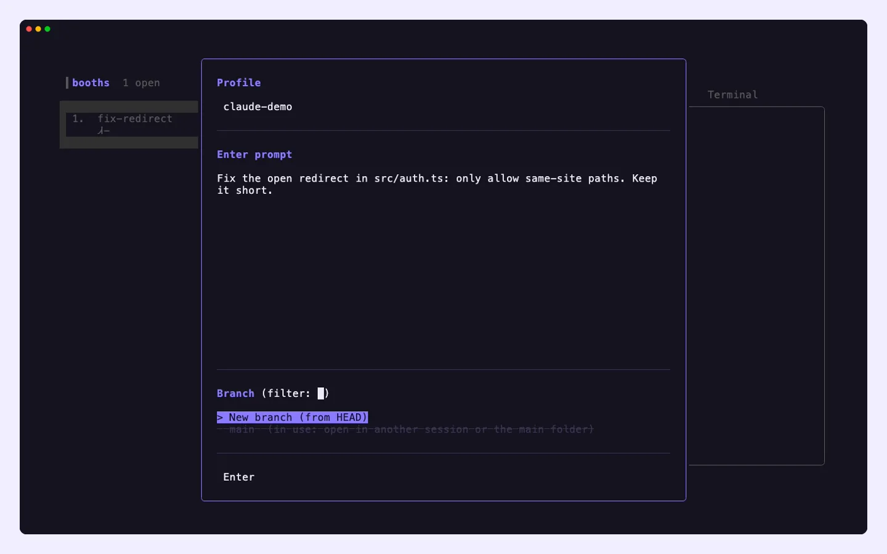
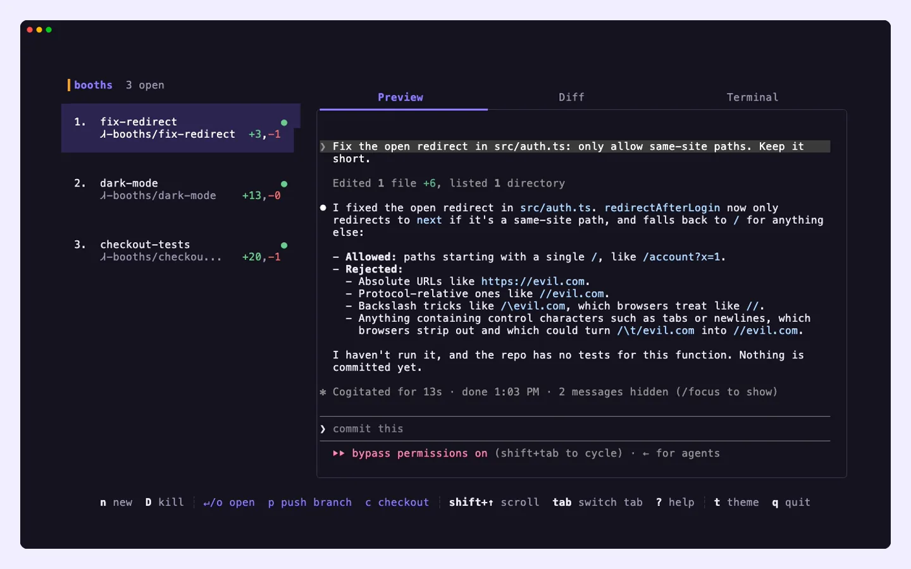
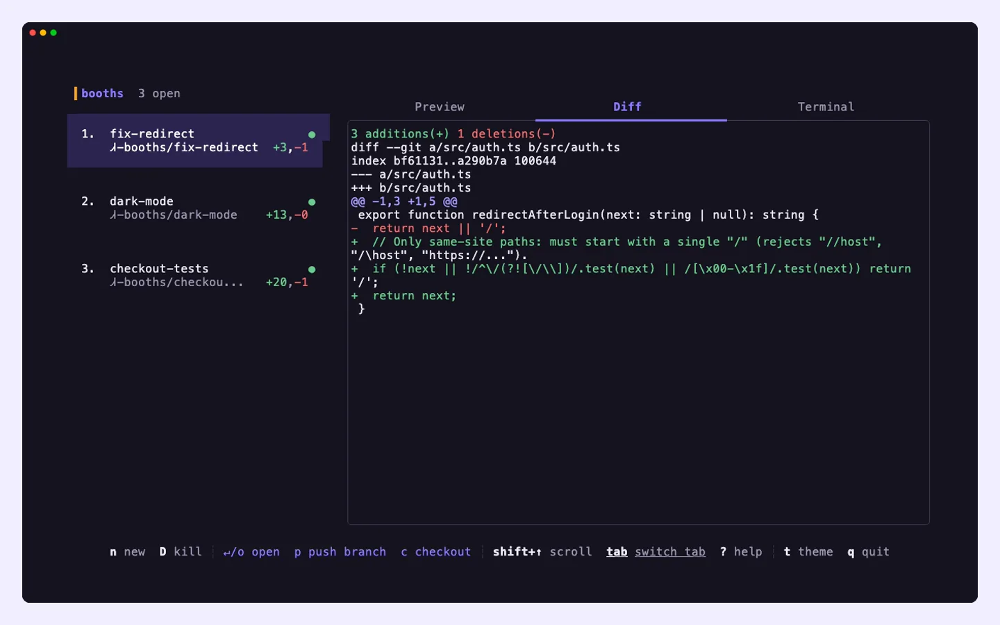

Run Claude Code in parallel, one booth per task.
Claude Booths is a terminal workspace for running several Claude Code sessions at once. Each session lives in its own booth, with its own branch, worktree and tmux session, so a bug fix, a refactor and a new test suite can move forward together without touching each other's files.
curl -fsSL https://raw.githubusercontent.com/sudarshan032/claude-booths/main/install.sh | bashbooths3 open
- Try it
- jkswitch booth
- tabpreview, diff, terminal
- Nopen a booth
- ↵step inside
- ctrl+qstep out
- ttheme
Parallel work, without the cleanup.
Two sessions in one folder overwrite each other's edits. A booth is an isolated copy of your repository, so every session works on its own branch and you decide what gets merged.
A branch of its own
Each booth is a git worktree cut from your current commit. Nothing it writes reaches your main checkout until you push it or check it out.
A session that keeps running
Every booth runs in tmux. Quit the app or close the terminal and come back later: the session is exactly where you left it.
Live output, no polling
Previews stream from tmux the moment the screen changes. A booth that's waiting on you uses no CPU at all.
-
Describe the task
Press
N, name the booth and write the prompt. Claude Booths creates the branch and worktree, starts Claude Code and hands it your prompt.
Name, prompt and branch in one dialog. -
Keep several going
Open a booth for every task on your list. The sidebar shows which sessions are working and which are waiting on you, and
j/kflip between their live screens.
Three sessions, three branches, one screen. -
Review, then ship
The Diff tab shows exactly what changed in the booth. Press
pto commit and push the branch for a pull request, orcto check it out in your main folder.
Every change, before it reaches main.
Bring the agent you already use.
Claude Code is the default, and any agent that runs in a terminal starts with -p. We mark an agent as verified only after the complete flow passes on that system: open with a prompt, live preview, diff, step in and out, restore after a restart, delete.
| Agent | macOS | Linux | Start it with |
|---|
Driven entirely from the keyboard.
Booths
- n
- Open a booth
- N
- Open a booth with a prompt
- jk
- Move between booths
- D
- Delete a booth
Inside a booth
- ↵
- Step inside, full screen
- ctrlq
- Step back out
- tab
- Preview, diff or terminal
- shift↑↓
- Scroll the history
Shipping
- p
- Commit and push the branch
- c
- Check out and pause
- r
- Resume a paused booth
App
- t
- Next theme
- ?
- Help
- q
- Quit; booths keep running
Up and running in a minute.
# installs claude-booths to ~/.local/bin curl -fsSL https://raw.githubusercontent.com/sudarshan032/claude-booths/main/install.sh | bash # then, inside any git repository claude-booths
git clone https://github.com/sudarshan032/claude-booths
cd claude-booths
go build -o ~/.local/bin/claude-booths .
# start a different agent
claude-booths -p codex
- tmuxKeeps every booth running in the background.
- gitBooths are worktrees, so run it in a repository with at least one commit.
- ghOptional, for pushing branches with
p. - An agentClaude Code by default, or any terminal agent with
-p.